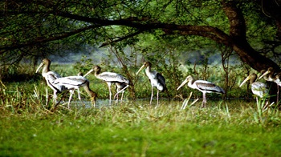
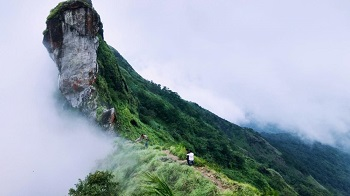

KUMARAKOM
An attraction of Kumarakom is the Bird sanctuary spreading over 14 acres of land. Located on the banks of the Vembanad Lake, the sanctuary is a favourite haunt of migratory birds like the Siberian Stork, egret, darter, heron and teal. Local birds like the water fowl, cuckoo, owl and water hen, other common varieties like the wood pecker, sky lark, crane and parrots can also be spotted here. 91 Species of local 50 species of migratory birds are found here.

VEMBANAD LAKE
Kottayam has a vast network of rivers and canals, which empty into the great expanse of water called the Vembanad Lake, a fast developing backwater tourism destination. Traditional Cargo boats called Kettuvallams are modified into Cruise boats and House boats, with all basic facilities like kitchen, toilet, bathrooms, sit outs etc. These boats gracefully move around the back waters, providing facilities to tourist to enjoy the beauty of the Vembanad Lake in a relaxed pace.
